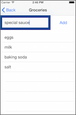
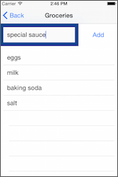

Introduction
Welcome to the NativeScript Getting Started Guide. Using this guide, you'll use NativeScript, a cross-platform JavaScript framework for building native mobile apps, to build an iOS and Android app from scratch.

What you're building
Here's the premise: your boss has tasked you with creating the next great grocery management app. You're given some designs from your design team, a few HTTP endpoints from your backend team, and you're told to build an app that does the following things:
- Allows users to register and login.
- Allows authenticated users to add and delete groceries from a list.
- Connects to your companies' existing RESTful services.
- Meets your design team's “native” mockups.
- Runs cross-platform—i.e. iOS and Android.
- Runs cross-device—i.e. phones and tablets.
This guide will walk you through building an app that meets these requirements and more. If you follow along to the end here's what the finished app looks like on iOS:

 

And here's what the app looks like on Android:

By building “Groceries“ you'll see just how easy NativeScript makes building iOS and Android apps—and fun too! Let's get started.
Getting up and running
There are two ways to use NativeScript: through the NativeScript Command-Line Interface (CLI) and through Telerik AppBuilder. Although the NativeScript framework itself is the same regardless of whether you use the CLI or AppBuilder, the way you interface with NativeScript—how you run your app, how you change configuration files, and so forth—differs based on the interface you choose.
For this guide, we're assuming that you are going to develop your app on your local computer using the NativeScript CLI. Although most of the steps and advice given in this guide apply equally to using NativeScript through the CLI or AppBuilder, some—mostly related to development workflow—are specific to using NativeScript through the NativeScript CLI.
Install NativeScript and configure your environment
The NativeScript CLI has a few system requirements you must complete before building NativeScript apps. As a first step start by going through the appropriate instructions below depending on your development machine's operating system:
Once you have the setup complete, use the npm install command to install the NativeScript CLI itself:
$ npm install -g nativescript
You should now have two commands available from your terminal: tns—which is short for Telerik NativeScript—and nativescript. The two commands are equivalent, so we'll stick with the shorter tns command throughout this guide.
You can verify the installation was successful by running tns in your terminal. You should see something like this:
$ tns
# NativeScript
┌─────────┬─────────────────────────────────────────────────────────────────────┐
│ Usage │ Synopsis │
│ General │ $ tns <Command> [Command Parameters] [--command <Options>] │
│ Alias │ $ nativescript <Command> [Command Parameters] [--command <Options>] │
└─────────┴─────────────────────────────────────────────────────────────────────┘
Start your app
With NativeScript CLI installed, it's time to start your app. You normally use the tns create command to create new apps—e.g. tns create hello-world—but for this guide we're scaffolded out a boilerplate project to act as a starting point for Groceries. To get it, navigate to a folder where you want to keep your app's code and clone the Groceries repo:
$ cd folder-you-want-groceries-to-be-in
$ git clone https://github.com/tjvantoll/groceries.git
$ cd groceries
The master branch has the final state of the Groceries app. Feel free to refer back to it at any time, but for now switch over to the “start” branch for the guide's starting point:
$ git checkout start
Add target development platforms
Your project is now setup, but before you run it you have to do a little iOS- and Android-specific configuration using the tns platform add command. Start by adding the Android platform:
$ tns platform add android
And if you're on a Mac add the iOS platform next:
$ tns platform add ios
The platform add command uses the native SDKs to initialize platform-specific projects and places the generated contents in your app's platforms folder. Later on, the NativeScript CLI will use the tools of the native SDKs to build these platform-specific projects into truly native application packages. During the process, the NativeScript CLI will automatically transfer your cross-platform code and resources from your project's app folder into its platforms folder.
Don't worry too much about the details, as the NativeScript CLI does a good job of abstracting you from the messy details. Let's look at how to run your app.
Running your app
With the platform initialization complete you can now run your app in an emulator or on devices. If you're on an app start by running the app in an iOS simulator with the following command:
tns run ios --emulator
If all went well you should see something like this:

Next run your app on Android with the following command:
tns run android --emulator
If all went well you should see your app running in an Android emulator:

You'll find that running the app in an iOS emulator vs. an Android emulator offers a different user experience to the user. This is because NativeScript is actually leveraging native iOS and Android code to present the UI—cool, huh?
Making changes with LiveSync
Jen: I think we need to show people how to change a file and see that change happen live. LiveSync should provide a good workflow for this and it's coming in 1.2. So let's just hold off for now and reevaluate this post 1.2.
TODO: Reevaluate this after 1.2. At this point, you have the NativeScript CLI downloaded and installed, as well as the iOS and Android dependencies that you need to run your app on both the iOS and Android emulators. Now you need a good development workflow to ease development. This article elaborates on a good workflow process that uses node, Sublime Text 3, and a Sublime Package to make building your NativeScript app for an emulator really fast and easy. We recommend that you configure your environment this way to save time.
Now that you have your app created, your environment configured, and your app ready to emulate for iOS and Android, you're ready to start taking a look at the code structure.
App building blocks
Before you start coding the Groceries app it's important to understand a NativeScript app's folder structure. It'll help you understand where to place new files, as well as a bit of what's going with NativeScript on under the hood.
Go ahead and open the Groceries app's files up in your text editor of choice and let's dig in.
Directory structure
To keep things simple, let's start by looking at the outer structure of the Groceries app:
.
└── Groceries
├── app
│ └── ...
├── package.json
└── platforms
├── android
└── ios
- app: The
appfolder contains all the development resources you need to build your app. Normally, you only touch code in theappfolder during your development flow. - package.json: This contains configuration about your app, such as you app id, the version of NativeScript you're using, and also which npm modules your app uses. We'll take a closer look at how to use this file in your app in chapter 5.
- platforms: This folders contains the platform-specific code NativeScript needs to build native iOS and Android apps. For instance in the
androidfolder you'll find things like your project'sAndroidManifest.xmland its .apk executable files. Similarly, in theiosfolder, you'll find the Groceries' Xcode project and the .ipa file NativeScript builds when deploying to an emulator or device.
The NativeScript CLI manages the platforms for you as you develop and run your app; therefore it's a best practice to treat the platforms folder as generated code. The Groceries app includes platforms/ in its .gitignore to exclude the files from source control.
Next, let's dig into the app folder, as that's where you'll be spending the majority of your time.
.
└── Groceries
├── app
│ ├── App_Resources
│ │ ├── Android
│ │ └── iOS
│ ├── shared
│ │ └── ...
│ ├── tns_modules
│ │ └── ...
│ ├── views
│ │ └── login
│ │ ├── login.js
│ │ └── login.xml
│ ├── app.css
│ ├── app.js
│ └── ...
└── ...
Let's look at what each of these files and folders do:
- App_Resources: Contains platform-specific resources such as icons, splash screens, and configuration files. The NativeScript CLI takes care of injecting these resources into the appropriate places in the
platformsfolder when you executetns run. - shared: This folder contains any files you need to share across views in your app. In the Groceries app you find a few model objects and a
config.jsfile used to share configuration variables like API keys. - tns_modules: This folder contains the NativeScript-provided modules you'll use to build your app. Each module contains platform-specific code (camera, http, file system, etc), exposed through a platform-agnostic API (e.g.
http.getJSON()). We'll look at some examples momentarily. - views: Each of your app's views will have a subfolder in
views. Each view is made up of an XML file, a JavaScript file, and an optional CSS file. For now on the login view is in this folder, but you'll be adding a few more later in this guide. - app.css: Contains global styles for your app. We'll dig into app styling in section 2.4.
- app.js: Sets up your application's starting module and initializes the app.
Take a look at app/app.js. This is the starting point for your app development, but it only contains three lines:
var application = require("application");
application.mainModule = "./views/login/login";
application.start();
Here, we're requiring, or importing, the tns module 'application' which includes various other modules that are useful globally. Then, we set the main screen of our app to be the 'login' screen which we'll look at below. And then we start up the app which loads the css as you can discover by looking in for the loadCss() function in app/tns_modules/application/application-common.js.
Now that our app is ready for development, let's turn our attention to its UI.
UI Components
First let's take a look at the UI components. You'll find several folders in app/views. Each folder contains one page of your app: list, login, and register are there already. If you look at app/views/login, you'll see three files. We're going to turn our attention to app/views/login/login.xml.
In NativeScript's framework, you can construct a UI either using xml or JavaScript. Often, it's a bit easier to write your presentation layer in xml. Build out the login screen by adding some UI components, namely three boxes or "Borders", two textfields, and a button.
Exercise: Add UI components to login.xml
Under the Image where the logo currently resides, add the following code:
<Border borderWidth="1" borderColor="#CECED2">
<TextField id="email_address" hint="Email Address" />
</Border>
<Border borderWidth="1" borderColor="#CECED2">
<TextField secure="true" hint="Password" />
</Border>
<Border borderWidth="1" borderColor="#0079FF">
<Button text="Sign in" tap="signIn" />
</Border>
<Button text="Sign up for Groceries" tap="register" />
We've added four items to our screen, three of which are surrounded with a Border component to make it look like a box.
- The TextField has the attributes you'd expect such as ids, hints, and the parameter 'secure' to ensure that a password isn't exposed.
- The Button component has a tap function bound to it called 'signIn' which will enable the user to login.
- Another button looks more like a link but also has a function bound to it to enable registration.
If you run your app at this point, you'll see the form:

Learn more about the UI components available in your app here.
Layouts
You have many options in NativeScript when creating layouts. One of the simplest is demonstrated in login.xml, the StackLayout. Here, we see several UI components nested in StackLayout tags:
<StackLayout orientation="vertical" horizontalAlignment="center">
Each of those components will be stacked on top of each other, vertically. Learn more about creating NativeScript layouts here and here.
Exercise: Create a stacked layout for our registration screen.
In /views/register/register.xml, add the following markup:
<Page loaded="load">
<StackLayout>
<Image src="res://logo" stretch="none" horizontalAlignment="center"/>
<Border borderWidth="1" borderColor="#CECED2">
<TextField text="{{ user.email_address }}" id="email" hint="Email Address" keyboardType="email" />
</Border>
<Border borderWidth="1" borderColor="#CECED2">
<TextField text="{{ user.password }}" secure="true" hint="Password" />
</Border>
<Border borderWidth="1" borderColor="#0079FF">
<Button text="Sign Up" tap="register" />
</Border>
</StackLayout>
</Page>
- Notice the function that is invoked when the Page is loaded: we'll take a look at the 'load' function in the code-behind file that we'll construct next.
- Notice also the way we load an image, with its source as "res://logo" and its stretch attribute set to 'none'. We'll talk more about handling images below as well.
- Finally, note the TextField's two-way binding, set up to bind its text to "user.email_address" or "user.password". We'll also discuss data-binding below.
Code-behind files
Although you can now see your login and registration screens, they are not yet wired up to send data to the backend. Let's fix that.
In app/views/login, you'll find login.js. This is called a 'code-behind' file because it supports the xml markup that constructs the presentation tier.
Exercise: Construct the login code-behind file.
Add some required elements at the top of this file:
var view = require("ui/core/view");
var dialogs = require("ui/dialogs");
var frameModule = require("ui/frame");
var page;
var User = require("../../shared/models/User");
var user;
In login.xml, notice a 'load' function that, when the page is loaded, initializes several variables. Let's build up that load function in app/views/login/login.js:
exports.load = function(args) {
user = new User();
var page = args.object;
page.bindingContext = user;
};
As we saw earlier, in login.xml, a button is bound to the signIn function:
<Button text="Sign in" tap="signIn" />
Construct the signIn function in app/views/login/login.js. :
exports.signIn = function() {
user.login()
.then(function() {
frameModule.topmost().navigate("./views/list/list");
}).catch(function() {
dialogs.alert({
message: "Unfortunately we could not find your account.",
okButtonText: "OK"
});
});
};
NativeScript supports JavaScript modules and their implementation follows the CommonJS specification. Using the 'require' function at the top of this file allows us to identify a module to be imported, and it returns the exported API of this module.
Similarly, we see the variable 'exports', which is an object that the module may add its API to as it executes.
In this file, we export the functions 'load' and 'signIn'. These functions set up the login routine to pass data through to the Model. We'll visit the Model below.
NativeScript modules
In the previous chapter, we already saw how NativeScript leverages the concept of 'modules' to include bits of code that are kept in the tns_modules folder. Using 'require', you can include these snippets ad hoc in your code when you need to use them, similar to the way we use npm to import node libraries. Let's take a closer look at these modules and what they can do for us.
Navigation and the frame module
While our Groceries app doesn't use complex navigation strategies, you have several available to you out of the box:
Exercise: Enable the "Sign Up" button on the login screen with a navigational change
Right now, if you were to click the Sign Up For Groceries button on the login screen, nothing would happen. Let's get this button to change the screen to show a registration form.
In app/views/login/login.js, add the following function under the signIn function:
exports.register = function() {
var topmost = frameModule.topmost();
topmost.navigate("./views/register/register");
};
This function makes use of the module 'frameModule' which looks for the topmost frame and navigates to it. Here, we tell the topmost frame to navigate to the register view. If you run your code in an emulator, you'll find that you can now navigate to your registration view by clicking the "Sign Up" button.
Learn more about how to link up your navigational strategies here.
Connecting to a backend with the http module
You probably noticed that while we were busy constructing the frontend xml and the code-behind JavaScript file, data was passing magically...somewhere. There's actually no magic involved; we have a config file that contains our API Key to Telerik Backend Services, a place where we are storing our users' information.
Take a look at app/shared/config.js. There's only a small code snippet there, but it includes a hard-coded API Key that we use throughout the app to access the backend (in real life, you would of course use your own API Key):
module.exports = {
apiUrl: "http://api.everlive.com/v1/GWfRtXi1Lwt4jcqK/"
};
The config file is used in our Model files, in particular our User Model: app/shared/models/User.js:
var config = require("../../shared/config");
It is used to construct a url via which we can send stringified JSON data via POST:
http.request({
url: config.apiUrl + "oauth/token",
method: "POST",
content: JSON.stringify({
username: that.get("email_address"),
password: that.get("password"),
grant_type: "password"
}),
headers: {
"Content-Type": "application/json"
}
In the sample above, we use the 'http' module which we simply 'require' at the top of the User.js file:
var http = require("http");
If you dig a bit into the tns_modules folder and find the http folder, you can see how a tns module is constructed. It includes:
- a package.json that sets the name of the module and includes the base http.js file
- a file containing android native code (http-request.android.js)
- a file containing ios native code (http-request.ios.js)
- a generic file (http.js) that abstract the platform-specific code above into a platform-agnostic format readable by the NativeScript runtime.
More information on modules can be found here.
Dialog module
The dialog module is also used several times in our Groceries app. Its code is found in the tns_modules/ui folder with other UI widgets. To use this module, you have several options, including control over the buttons you include in the alert and their text, along with custom messaging in the alert itself:
dialogs.alert({
message: "Unfortunately we were unable to create your account.",
okButtonText: "OK"
});
ListView
Let's use another UI module to craft a page to actually hold our grocery data. This is the page we want users to navigate to once they login, so let's add a line in app/views/login/login.js to allow this navigation to happen. In the signIn function, add the following line after '.then(function(){':
frameModule.topmost().navigate("./views/list/list");
Exercise: Construct the list view
In app/views/list/list.xml, let's get started using the ListView module by creating a list where our groceries will reside:
<Page navigatedTo="navigatedTo">
<GridLayout rows="auto, *" columns="*, *, *">
<Border borderWidth="10" borderColor="#034793" row="0" colSpan="2">
<TextField id="grocery" text="{{ grocery }}" hint="Enter a grocery item"/>
</Border>
<Button text="Add" tap="add" row="0" col="2"></Button>
<ListView items="{{ groceryList }}" row="1" colSpan="3">
<ListView.itemTemplate>
<Label text="{{ name }}" horizontalAlignment="left"/>
</ListView.itemTemplate>
</ListView>
</GridLayout>
</Page>
Note our use of the ListView module. In this case, we're not requiring a tns_module from the ui folder, but are rather using the ui widget within the xml code. This is a different way of using these modules. If we wanted to, we could construct a ListView in pure JavaScript code behind the scenes as shown in this example. However for our purposes, we can simply use xml to build the ListView and thereby follow the pattern we use in the login and register screens.
Let's go ahead and build the code-behind file as usual. In app/views/list/list.js, add:
var view = require("ui/core/view");
var viewModel = require("./list-view-model");
var page;
exports.navigatedTo = function(args) {
page = args.object;
if (page.ios) {
page.ios.title = "Groceries";
}
page.bindingContext = viewModel;
viewModel.reset();
};
There are a couple of things happening in this file. First, we have the function navigatedTo, which will set up our page for data binding when we navigate to it in the xml:
<Page navigatedTo="navigatedTo">
Notice the use of a slightly different pattern in the code-behind file. In this case, we're going to use a View Model file separately from the code-behind file. We'll get into more detail in the next chapter.
CSS
NativeScript considers CSS a type of tns_module, and you can dig into the code in app/tns_modules/ui/styling. The framework supports a subset of CSS so that you can add styles to your app. We include global styles in app/app.css, where you'll find some styles that format all the textfields, buttons and borders. You can also include individual css files in each view folder, which would be appropriate for styles that are isolated to a certain page.
We don't have to worry about any particular CSS styling in the login or register screens, but let's turn our attention to the grocery list itself which appears after logging in. It needs a little massaging, so let's add a few CSS styles to app/views/list/list.css:
ListView {
margin: 10;
}
Label {
margin: 10;
}
Border {
margin: 0;
}
This will give us a lttle more room for our groceries to display nicely.

Other modules
There are several modules that come out of the box with your NativeScript install, including a location service, a file-system helper, timer, camera, and even a color module that helps navigate the ways various colors are handled cross-platform. If you are interested in helping build and distribute more modules for the community, there's a good guide available on how to do this.
MVVM
What is MVVM?
In this chapter, we'll learn about the base pattern on which the NativeScript framework is built, MVVM, or "Model, View, View Model". MVVM is an architectural pattern that helps you separate the UI from the application logic and data model. We've already seen several examples of the elements that are used in this design pattern:
- Model: The model defines and represents the data. Separating the model from the various views that may use it allows for code reuse.
- View: The view represents the UI. The view is often data-bound to the View Model so that changes are instantly represented on the presentation tier.
- View Model: The View Model contains the application logic, expositing it for the View.
The most basic benefit of using this sort of separation between the Model, View, and View Model, is that we are able to craft two-way data binding such that the View Model can act as a switchboard between the Model and the View. Let's wire up our login xml to support binding.
Data Binding
Exercise: Bind data to the frontend of login.xml
Instead of just showing a blank text field, we can help the user login more quickly by binding data to the login text fields. In app/views/login/login.xml, edit the username text field to show a default username:
<TextField text="{{ email_address }}" id="email_address" hint="Email Address" />
Similarly, edit the password field in this file:
<TextField secure="true" text="{{ password }}" hint="Password" />
This way, you can pull in values from the code-behind file into your app; add the following two lines at the bottom of the load function in app/views/login/login.js:
user.set("email_address", "tj.vantoll@gmail.com");
user.set("password", "password");
If you run the app, you'll find that the email address and password fields are pre-populated with data coming via the View Model.
You can create your MVVM code structure like we did for login, with only login.xml and login.js communicating with User.js as its model. Alternately, you can include a second file specific to the View Model for each page. We're going to do this latter pattern for our Registration field.
Constructing a View Model
While you can certainly keep your View Model functionality in the code-behind file as we did for the login routines, an alternate pattern involves separating the code-behind file from a view-model.js file. This separation helps you isolate concerns for more effective unit testing. Let's build out the registration form using this pattern.
A best practice for working within the MVVM pattern is to build the View Model first, before even touching the UI. The View Model shouldn't be aware of UI elements at all, it simply channels data back and forth.
Exercise: Construct the Registration View Model
Let's get the View Model into place so that data from the frontend XML can filter through the code-behind file, through the View Model, and over to the Model. We need to start with requiring and creating an Observable object.
Observable is a core building block for a View Model. It provides it with a mechanism required for two-way data binding so as to provide communication between the View and the View Model. This means that if the user updates the data in the UI the change will be reflected in the ViewModel and vice versa.
In app/views/register/register-view-model.js, add the following code:
var dialogs = require("ui/dialogs");
var frameModule = require("ui/frame");
var observable = require("data/observable");
var User = require("../../shared/models/User");
Here, we're including several NativeScript modules, including dialog, frameModule, and observable. We also include the User Model so that it is available for data pass-through.
Under that code, create a function that creates a new user based on the User Model:
function RegisterViewModel() {
this.set("user", new User());
}
Then, we can use the prototype pattern to create a new bindable object, the RegisterViewModel:
RegisterViewModel.prototype = new observable.Observable();
Next, add in the register function to handle the way the UI will be have based on the response of the model to data passed to it:
RegisterViewModel.prototype.register = function() {
this.get("user").register()
.then(function() {
dialogs
.alert("Your account was successfully created.")
.then(function() {
frameModule.topmost().navigate("./views/login/login");
});
}).catch(function() {
dialogs.alert({
message: "Unfortunately we were unable to create your account.",
okButtonText: "OK"
});
});
};
And finally, export this new View Model which we have called RegisterViewModel:
module.exports = new RegisterViewModel();
Note that, similarly to the way data is handled in login, we have set up a new prototype for registration, and invoked the function that is handled in app/shared/models/Users.js. The user is either registered or there is a problem, in which case a dialog pops up. We use the dialog ui by including it at the top of the View Model file, as you saw above.
Now that we have the View Model finished, we can build the view and bind it to the View Model. We created the xml for the view earlier so as to learn about layouts, so let's create the registration code-behind file.
Exercise: Build the registration code-behind file
Since we have moved much of the application logic to the registration-view-model.js file, we can use the code-behind file to contain logic closer to the UI. In this case, we're going to add some OS-specific code to handle autocorrecting behavior. In app/register/register.js, include the core module 'view' so that we can control the view from this file, and include the View Model:
var view = require("ui/core/view");
var viewModel = require("./register-view-model");
Next, add the load function that is invoked from the xml:
exports.load = function(args) {
var page = args.object;
var email = view.getViewById(page, "email");
page.bindingContext = viewModel;
// Turn off autocorrect and autocapitalization for iOS
if (email.ios) {
email.ios.autocapitalizationType =
UITextAutocapitalizationType.UITextAutocapitalizationTypeNone;
email.ios.autocorrectionType =
UITextAutocorrectionType.UITextAutocorrectionTypeNo;
email.ios.keyboardType =
UIKeyboardType.UIKeyboardTypeEmailAddress;
}
};
In this snippet, we use a bit of native code to manage the keyboard and stop capitalization in the email field, based on its id.
Then, route the logic for the registration routine through this file to the View Model:
exports.register = function() {
viewModel.register();
};
Now we are ready for our presentation layer to pass information through the View Model and over to the Model.
Exercise: Wire up the registration function in the Model
Let's get something to happen when we click the register button in the register screen. Add the following code to /app/shared/models/User.js:
User.prototype.register = function() {
var that = this;
return new Promise(function(resolve, reject) {
http.request({
url: config.apiUrl + "Users",
method: "POST",
content: JSON.stringify({
Username: that.get("email_address"),
Email: that.get("email_address"),
Password: that.get("password")
}),
headers: {
"Content-Type": "application/json"
}
}).then(function() {
resolve();
}).catch(function() {
reject();
});
});
};
Now, if you rebuild and run your app in an emulator, you can register a new user!

Now that we have both login and registration routines complete, we need to work on the app's actual functionality as a grocery list management tool.
Connecting a Model and a View Model
To be able to manage data in the grocery list, we need to build a connection between the presentation tier and the database as we did for registration. Let's build out these pieces in our grocery list.
Exercise: Construct the list Model and View Model
In app/views/list/list-view-model.js, add:
var dialogs = require("ui/dialogs");
var observable = require("data/observable");
var GroceryList = require("../../shared/models/GroceryList");
function ListViewModel() {
this.set("grocery", "");
this.set("groceryList", new GroceryList([]));
}
ListViewModel.prototype = new observable.Observable();
ListViewModel.prototype.reset = function() {
this.get("groceryList").empty();
this.get("groceryList").load();
};
module.exports = new ListViewModel();
Here, we're creating a new empty grocery array and a groceryList variable to instantiate our GroceryList object that we create in the Model. We're also emptying and refilling our groceryList in the reset function. Let's create the GroceryList object in the Model:
In app/shared/models/GroceryList.js, let's grab any Grocery data that might exist in the backend and push it into the grocery array:
var config = require("../../shared/config");
var http = require("http");
var observableArray = require("data/observable-array");
function GroceryList() {}
GroceryList.prototype = new observableArray.ObservableArray([]);
GroceryList.prototype.load = function() {
var that = this;
http.getJSON({
url: config.apiUrl + "Groceries",
method: "GET",
headers: {
"Authorization": "Bearer " + config.token
}
}).then(function(data) {
data.Result.forEach(function(grocery) {
that.push({ name: grocery.Name });
});
});
};
GroceryList.prototype.empty = function() {
while (this.length) {
this.pop();
}
};
module.exports = GroceryList;
In the load function above, we are pulling down the list associated to the user's credentials. If you rebuild, run the app, and login as tj.vantoll@gmail.com, you'll find a list of groceries pulled from Backend services in the Groceries data type. It will look something like this:
It's great that we can see data already in the database, but we also need to add some items. Let's build that functionality.
Exercise: Add the ability to create a Grocery item
Notice at the top of the list is a text area and an 'Add' button. Right now, it doesn't do anything. Let's fix that.
In app/views/list/list.js, add a function to respond to the 'add' tap event that is already in list.xml. We'll put this underneath the navigatedTo function.
exports.add = function() {
view.getViewById(page, "grocery").dismissSoftInput();
viewModel.add();
};
Notice that this function performs two tasks: first, it dismisses the keyboard, and then it calls the add function in the ViewModel.
In app/views/list/list-view-model.js, let's add that 'add' function to pass data to the model:
ListViewModel.prototype.add = function() {
this.get("groceryList").add(this.get("grocery"))
.catch(function() {
dialogs.alert({
message: "An error occurred adding to your list.",
okButtonText: "OK"
});
});
this.set("grocery", "");
};
In this function, we get the 'grocery' item from the input field and add it to the groceryList object.
Finally, let the manipulation of this new data be handled in the Model by adding the following function under the 'empty' function in /app/shared/models/GroceryList.js:
GroceryList.prototype.add = function(grocery) {
var that = this;
return new Promise(function(resolve, reject) {
http.request({
url: config.apiUrl + "Groceries",
method: "POST",
content: JSON.stringify({
Name: grocery
}),
headers: {
"Authorization": "Bearer " + config.token,
"Content-Type": "application/json"
}
}).then(function() {
that.push({ name: grocery });
resolve();
}).catch(function() {
reject();
});
});
};
If you build and rerun your app now, you'll find that you can add a grocery item and it will appear immediately in your list.
Using npm
Often, we need to include modules that are not by default available in tns_modules to allow for special functionality. We can leverage npm, node package manager, to import plugins and modules into our project. Let's add the NativeScript Social Share widget so that we can email our grocery lists.
Using npm modules in your app
Exercise: Install and use the Social Sharing widget
Cd to the app directory in your Groceries project folder:
cd Documents/NativeScript/Groceries/app/
and install the module:
npm install nativescript-social-share
We're going to add this functionality to our list of groceries, so in /app/views/list/list.js, require the module:
var socialShare = require("../../node_modules/nativescript-social-share/social-share");
Let's make an area at the top of our list file to show a link to share a grocery list. Under the
<Page.optionsMenu>
<MenuItem text="Share" tap="share" android.position="actionBar"/>
</Page.optionsMenu>
Now we need to get our grocery list into a comma-delimited format that will be fed to the socialSharing widget. To do this, add a function to return our list at the bottom of list-view-model.js:
ListViewModel.prototype.getList = function(){
var groceryList = this.get("groceryList");
var list = {};
for(var i = 0, size = groceryList.length; i < size ; i++){
list[i] = groceryList.getItem(i).name;
console.log(list[i])
}
return list
}
And then finally add a function in app/views/list/list.js to call the socialSharing widget:
exports.share = function() {
var list = viewModel.getList();
socialShare.shareText(list);
}
Now when you run the app, you'll see a Share button at the top that, when clicked, allows you to email a list using a native interface:
It's very cool to add ready-built modules to your app. But maybe you want to build your own!
Building your own NativeScript modules
Accessing native APIs
...
How it works
...
Deleting from a list
...
Using android and ios files
...
Next steps
...
Documentation
...
Showcase
...